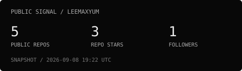
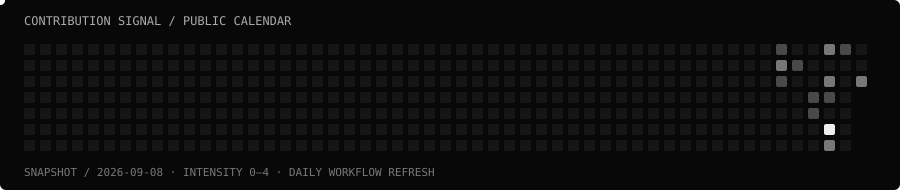
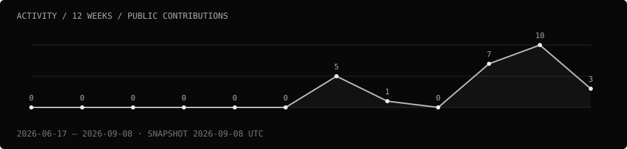

I build things, pull them apart, and follow the questions they leave behind.
The work is the introduction. The archive stays open.
01 / system status
MODE building in public
SIGNAL systems + interfaces
METHOD experiment / inspect / iterate
SOURCE open
02 / selected transmissions
TPLAYTV ↗
TV-first LAN multiplayer: phones join rooms as controllers; a shared display hosts the game. Express, Socket.IO, and typed game/controller contracts connect the pieces.
phone input → room server → shared screen
Phantom AI ↗
A React chat interface with conversation persistence, Markdown/code rendering, and browser speech. Its shared server handler connects to Groq through an OpenAI-compatible API.
conversation → server handler → model → response
Forest Quest ↗
A Phaser browser platformer with enemy combat, fireballs, bosses, and character upgrades. A place to experiment with movement, collisions, and game state.
Portfolio ↗
A Persona-inspired menu interface in HTML, CSS, and JavaScript. Separate model, view, and controller modules handle data, rendering, and navigation.
03 / engineering interests
Real-time state · interface behavior · server boundaries · game systems · readable architecture.
Open-source direction
Read the source → reproduce a problem → make a useful fix → explain the change → maintain it.
04 / telemetry

Contribution signal / activity / optional coding time
Contribution snake

Activity graph

Coding time
Coding-time telemetry is not connected.
GitHub activity · Integration notes
05 / build log
2026-09 · Profile signal — hand-composed ASCII hero, source-checked project notes, and quieter telemetry.
Follow the current work: TPLAYTV commits · Phantom AI commits · Forest Quest commits.
06 / principles
- Build something real. Inspect what breaks.
- Read the source. Make the boundaries clear.
- Ship small. Leave the next person a useful trail.